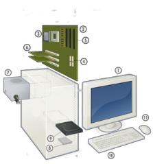
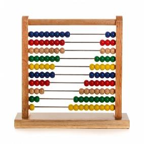
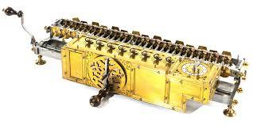

PRACTICA DE HTML
Realizar el siguiente documento utilizando solo etiquetas HTML (Sin CSS o estilos)
Los bordes fin
La computadora
Computadora, es una máquina electrónica digital programable que ejecuta una
serie de
comandos para procesar los datos de entrada, obteniendo convenientemente información que
posteriormente se envía a las unidades de salida.
Una computadora está compuesta por numerosos y diversos circuitos integrados y varios
elementos
de apoyo, extensión y accesorios, que en conjunto pueden ejecutar tareas diversas con suma
rapidez y bajo el control de un programa (software).

La constituyen dos partes esenciales, el hardware, que es su estructura física
(circuitos electrónicos, cables, gabinete, teclado, ratón, etc.), y el software,
que es su parte intangible (programas, datos, información, documentación, etc).
Historia
|
A Través del tiempo
|
Eventos más trascendentales
|
|
Abaco (5,000 años atrás)

|
Primera Generación (1945-1956)
- La computadora fue utilizada para fines
militares durante la Seguna Guerra Mundial
- IBM creó la primera calculadora electrónica
en 1944.
- Uso de los tubos al vacío.
|
|
Calculadora de Pascal (1642)

|
Segunda Generación (1956-1963)
- Se remplazaron los tubos al vacío por los
transistores.
- Se crearon los lenguajes de alto nivel como
COBOL y FORTRAN.
|
|
Máquina de multiplicar de Leibniz
(1694)

|
Tercera Generación (1964-1971)
- Uso de chips de silicón.
- Sistemas operativos.
|
Clases y categorías
|
Clases y Categorías de Computadoras
|
| Clases |
|
| Análoga |
| Digital |
| De uso general |
| De uso especial |
| Categorías |
|
| Supercomputadora |
| Mainframe |
| Minicomputadoras |
| Servidor |
| Microcomputadoras |
Componentes
- Caja (Case)
- Placa base
- Microprocesador
- Bios
- Memoria
- Teclado
- Disco duro
- Monitor
Referencias
- http://google.com
- http://wikipedia.com
- http://unap.edu.pe